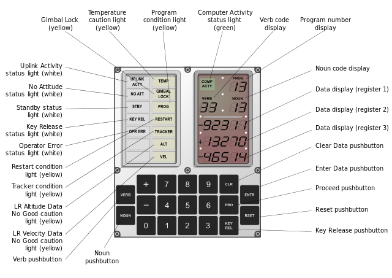
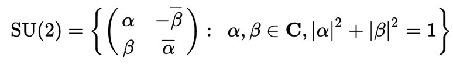
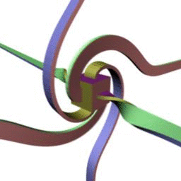

This article is about a single strange topic which doesn't have a pithy title but which manifests in several areas:
- Gimbal Lock
- Orientation Entanglement
- Quantum Mechanics
- The theory of rotation groups
The underlying concepts that relate these topics comes from Group Theory/Abstract Algebra. I understood the algebra behind these concepts but had little or no intuition for them. When that happens I feel like the algebra is worthless, or a kind of trick. Intuition is key. So after grappling for a week with these concepts I have some intuitions which is what this article is about. I'm not sure a mathematician would agree with everything here, and I'd love to have such feedback, but by writing this I'm able to organize my thoughts in some sort of coherent manner.
Perhaps it is simplest to start with a topic that confronts anyone who does even a little graphics programming: Gimbal Lock.
When you first start working with a framework like three.js and you need to rotate an object, it is natural to turn to Euler angles, invented by the great man himself. Euler angles are a set of 3 angles that describe the orientation of a rigid body in a fixed coordinate system. The three angles are sometimes called yaw, pitch and roll. Or heading, elevation and bank. The first angle might rotate the object around the X-axis, the second around its (new) Y-axis and the third around its (new) Z-axis. There are several different ways to define these angles, but however you define them, there are always 3 angles. They are widely used in graphics programming to rotate objects.

Euler angles example from Wikipedia page on same.[1]
Gimbals are mechanical devices. A single gimbal allows rotation around a single axis. A set of 3 orthogonally nested gimbals extends this to 3 separate axes. In an inertial system, the 3 gimbal system senses rotation about all axes of 3 dimensional space. They have been used in ships, airplanes and rockets.

Gimbal with 3 axes of rotation. From Wikipedia.[2]
However, they suffer from a flaw called Gimbal Lock whereby in certain orientations, when 2 gimbals rotate around the same axis, the system loses one degree of freedom. The term Gimbal Lock comes from the world of mechanical engineering. Mathematicians refer to it as a singularity. What this means is that sometimes when you reach a certain point in your rotation, you can't go any further by incrementing the Euler angles and you have to do a 180 degree flip. Here is an example of that 180 degree flip in a simple three.js animation. The viewer is doing a polar orbit and must execute a flip at each pole:
Note: This is not a purely abstract problem of graphics programming. It had real world consequences: The threat of Gimbal lock famously occurred during both Apollo 11 and Apollo 13. The Apollo 11 spacecraft actually had to execute such a 180 degree flip to avoid it. It was an especially dangerous threat to Apollo 13 right after the initial explosion when the spacecraft was pitching about wildly.[3]

Schematic of the DSKY interface used in Apollo spacecraft. Notice the 'Gimbal Lock' light in the 2nd row, 2nd column.
Back to programming. The usual advice if you want to avoid 180 degree flips in your computer game is to stop using Euler Angles and to start using Quaternions instead. Libraries like three.js offer both methods.
So why do Euler angles suffer from Gimbal lock and Quaternions do not? To answer that, let's first try to get a deeper understanding of rotations in 3 dimensions.
There is a mathematical group called SU(2) defined as follows:

This group will be very relevant to this discussion because it turns out that SU(2) is isomorphic to the 3-sphere, S³, as is demonstrated here in wikipedia. This is totally intuitive since SU(2) describes a sphere in C² space, i.e. in 2-dimensional complex space. What is 2-dimensional complex space? Well, one dimensional complex space (C¹) is usually drawn as a plane with the imaginary axis being the vertical axis and the real axis being the horizontal axis. Mathematicians might say that C¹ is diffeomorphic to R², i.e. we can think of it as being 2 dimensional. So we can think of C² as being 4 dimensional, it is diffeomorphic to R⁴. The fact that SU(2) is a unitary matrix with determinant = 1 (|α|²+|β|² = 1, as stated above) means it maps to a sphere in 4 dimensional space, aka S³. So that's the intuition.
This is relevant because SU(2) is also isomorphic to the subgroup of quaternions of norm 1. They describe the same rotational space.
So SU(2) is isomorphic to S³. It is also isomporphic to the group of unit quaternions. So that's why quaternions can describe all 3-D rotations without singularities and why SO(3) cannot.
So that's why quaternions work, but why don't Euler angles work? Why do they have a singularity?
Euler's rotation theorem states that any rotation in 3 dimensions can be described by a rotation of some angle around some axis. We can specify the axis of such a rotation using 2 angles, and the radius of the axis vector specifies the angle of rotation around the axis. (You may remember a similar representation of the angular velocity vector from freshman physics.) The union of these vectors form a ball with radius of π. Negative rotations correspond to vectors of negative length. A vector of radius π represents the same Euler rotation as a vector of radius -π. So antipodal points on the surface of this solid 3d sphere are identified.
Euler angles are a map onto the group SO(3), the group of all rotations about the origin of three-dimensional Euclidean space R3 under the operation of composition. There are many ways to map onto SO(3), Euler angles are just one way. But all maps onto SO(3) suffer from a similar parameterization problem as Euler angles do. [4]
What is this SO(3) group then? It is a normal subgroup of O(3), the group of 3×3 orthogonal matrices, but with determinant equal to 1:
O(3) = {A ∈ GL(3) | A-1= AT}
So, SO(3) = { A ∈ O(3) | det(A) = 1 }
Now what is the relation between SU(2) and SO(3)? SU(2) is a 'double cover' of SO(3). SU(2)/{±I} and SO(3) are isomorphic. That means that every point in SO(3) maps to 2 points in SU(2). The effect of the double cover is to identify antipodal points in SO(3).
Another way to look at it: A sphere (S²) can be seen as the union of 2 discs (D²) joined at the equator of the sphere. So a 3-sphere (S³) can be seen as the union of 2 balls (D³). The ball representing SO(3) described in the previous paragraph on Euler rotations is only one such ball. We need another ball.
I find SO(3) to be really strange. On the one hand it is the most intuitive space for us to work with. We intuitively understand 3-D rotations and Euler angles. A child could understand them. A (normal) child could not understand quaternions. Yet simple as it seems SO(3) is full of strange phenomena/singularities like Gimbal lock and exhibits weird rotation behavior like the plate trick or the Dirac belt trick:

Dirac Belt Trick [5]
Let us linger on the Dirac belt trick for a second. This is an example of orientation entanglement. If the object you are rotating in 3-d space is embedded in a fixed framework like a room, then after one rotation of 360 degrees, the orientation of your object is entangled with respect to the room. You have to turn the object an additional 360 degrees to untangle it.
This is because SO(3) is not simply connected. It is not simply connected because antipodal points are identified. SU(2) is simply connected. But since SO(3) = SU(2)/{±I}, antipodal points in SO(3) are identified and it is not simply connected. I think of it this way: SU(2) represents 2 Spheres: S2+ and S2-. Taking the quotient identifies these 2 spheres via the antipodes.
How can we get an intuition for this statement: The identification of the antipodes in SO(3) means SO(3) is not simply connected? This is discussed in many places, I quote one example here:
"in the ball with antipodal surface points identified, consider the path running from the "north pole" straight through the interior down to the south pole. This is a closed loop, since the north pole and the south pole are identified. This loop cannot be shrunk to a point, since no matter how you deform the loop, the start and end point have to remain antipodal, or else the loop will "break open". In terms of rotations, this loop represents a continuous sequence of rotations about the z-axis starting and ending at the identity rotation (i.e. a series of rotation through an angle φ where φ runs from 0 to 2π)" https://en.wikipedia.org/wiki/Rotation_group_SO(3)
That article goes onto explain why with an additional rotation you get a closed loop.
Because SO(3) is not simply connected, problems will always occur when trying to parameterize this space of 3D rotations. Gimbal lock is an example of a problem caused by trying to parameterize SO(3).
The fact that SU(2) is a double cover of SO(3) has some deep applications to physics. "Quantum mechanical spin is not described by a vector as in classical angular momentum. It is described by a complex-valued vector with two components called a spinor. There are subtle differences between the behavior of spinors and vectors under coordinate rotations, stemming from the behavior of a vector space over a complex field."[6] In other words the spinor Spin(3) is isomorphic to SU(2). Physicists use Pauli Matrices as generators of SU(2). If you "rotate" an electron through an angle of 2π it is not the same as what you started with. Fermions have spin of 1/2. This is related to the fact that electrons are described by representations of SU(2) and not SO(3). It takes a rotation of 720 degrees for a fermion to return to its original state.
I hope the intuitions described above are not too sloppy, and that I haven't mixed geometry and topology in a way that is unacceptable.
Addendum 1:
Another way to state Euler's Rotation Theorem: If A is an element of SO(3) where A ≠ I, then A has a one dimensional eigenspace. This is not to say that A does not also have a two-dimensional eigenspace but that A must have a one-dimensional eigenspace. It is this eigenspace that is known as the axis of rotation. https://en.wikipedia.org/wiki/Orientation_(geometry)
Addendum 2:
"A 2×2 matrix with complex entries represents an element of U(2) iff U*U=1. So the determinant detU is a complex number of modulus 1. The group U(1) consists of all complex numbers of modulus 1, which allows us to rephrase the previous finding as follows: Taking the determinant is a group homomorphism, det: U(2) → U(1). Indeed detUV = detUdetV and det1 = 1. The kernel of the group homomorphism det is a subgroup of U(2)". https://en.wikipedia.org/wiki/Unitary_group
That subgroup is SU(2). So: U(2) = U(1) × SU(2). Or alternatively, U(2) = S³ × S¹
U(1) is a circle. So we're factoring out a whole circle to get SU(2).
It appears that U(2) can't be identified with a manifold, see here: https://math.stackexchange.com/a/843892
Identifying SU(2) with S³ makes it much easier to think about. The fact that it is simply connected is obvious for instance.
References:
[1] By Euler2.gif: Juansempere derivative work: Xavax (This file was derived from Euler2.gif:) [CC BY-SA 3.0 (https://creativecommons.org/licenses/by-sa/3.0) or GFDL (http://www.gnu.org/copyleft/fdl.html)], via Wikimedia Commons. From: https://en.wikipedia.org/wiki/Euler_angles
[2] By Lookang many thanks to Fu-Kwun Hwang and author of Easy Java Simulation = Francisco Esquembre (Own work) [CC BY-SA 3.0 (https://creativecommons.org/licenses/by-sa/3.0)], via Wikimedia Commons. From: https://en.wikipedia.org/wiki/Gimbal
[3] "https://www.universetoday.com/119984/13-more-things-that-saved-apollo-13-part-9-avoiding-gimbal-lock/"
[4] https://en.wikipedia.org/wiki/Rotation_group_SO(3)
[5] By JasonHise (Own work) [CC0], via Wikimedia Commons. https://commons.wikimedia.org/wiki/File%3ABelt_Trick.gif
[6] https://en.wikipedia.org/wiki/Spin-%C2%BD#Complex_phase
Other references:
http://www.mat.univie.ac.at/~westra/so3su2.pdf
http://alistairsavage.ca/mat4144/notes/MAT4144-5158-LieGroups.pdf
 Tetrahedral symmetry
Tetrahedral symmetry